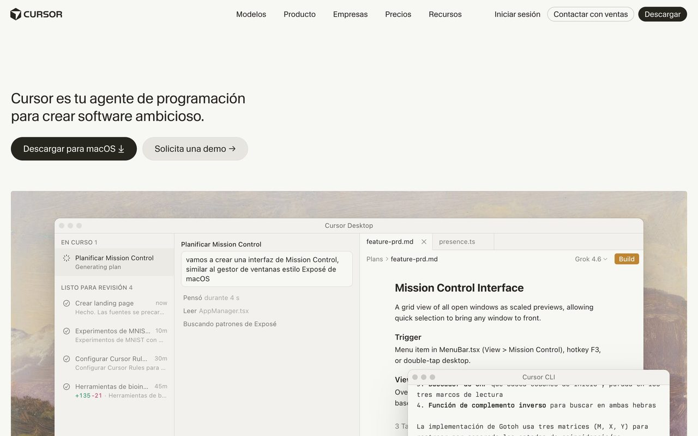
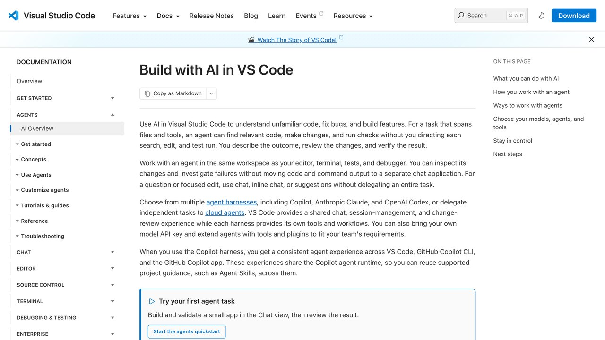

Hay tres categorías de herramientas de IA para programar, y se comparan constantemente como si fueran lo mismo cuando resuelven problemas distintos. Esta guía separa por categoría para que elijas según lo que realmente necesitas, no según cuál suena más de moda.

Por qué esta comparación se hace tan mal tan a menudo
La mayoría de comparativas que circulan tratan a Claude Code, Cursor y GitHub Copilot como si compitieran directamente por el mismo puesto, puntuándolos en una tabla con las mismas columnas (velocidad, precisión, precio) como si fueran variantes del mismo producto. El problema de fondo es que resuelven necesidades distintas en momentos distintos del trabajo de programar, así que preguntarse "¿cuál es mejor?" sin más contexto es como preguntar si un martillo es mejor que un destornillador: depende por completo de qué estás intentando construir. Y cuando esa tabla sí trae números, conviene saber de dónde salen: lo explicamos en cómo leer un benchmark de IA sin que te engañen.
Esta guía evita esa trampa organizando por categoría de uso en vez de por marca, porque la pregunta útil no es "¿qué herramienta es la más potente?" sino "¿qué necesito en este momento concreto: delegar una tarea completa, revisar cada cambio de cerca, o solo recibir ayuda mientras escribo?". Las tres respuestas llevan a herramientas distintas, y ninguna es objetivamente superior a las otras dos en abstracto. Esta confusión no es exclusiva de quien empieza: incluso programadores con años de experiencia caen en la trampa de buscar "la mejor herramienta de IA para programar" como si existiera una respuesta única, en vez de preguntarse primero qué tipo de tarea tienen delante en ese momento concreto. La categoría correcta depende de la tarea, no de una jerarquía fija entre productos que se mantenga igual sin importar qué estés construyendo ese día.
Claude Code. Leen y modifican archivos de un proyecto entero, ejecutan tests y corrigen sus propios errores en bucle.
Cursor, Windsurf. Editor completo con el modelo incrustado, para trabajar línea a línea con supervisión constante.
GitHub Copilot. Nació como autocompletado en el editor que ya usas; hoy también tiene modo agente (ver «Lo que ha cambiado»).
Las tres opciones, una a una
Claude Code: cuando quieres delegar la tarea completa
Es la opción con más autonomía: le das un objetivo ("añade autenticación con email a este proyecto") y trabaja sobre el repositorio completo, tocando varios archivos si hace falta, ejecutando comandos y verificando que el resultado funciona antes de darlo por terminado. Conviene cuando la tarea es grande, tediosa o repetitiva, y cuando ya sabes lo bastante para revisar el resultado antes de aceptarlo.
El punto fuerte real de este tipo de herramienta no es solo escribir código: es el ciclo completo de observar, planificar, actuar y verificar sin que tengas que estar copiando mensajes de error de vuelta al chat. Si un test falla después de un cambio, el propio agente lee el error, ajusta el código y vuelve a probar. Esto lo hace especialmente valioso para tareas mecánicas pero laboriosas: renombrar una función usada en cuarenta archivos, migrar de una librería a otra, o escribir la batería de tests que llevas semanas posponiendo.
La contrapartida es que, al operar sobre el repositorio completo con más autonomía, revisar el resultado final requiere más atención que revisar un cambio línea a línea. Si no tienes experiencia leyendo diffs de varios archivos a la vez, la sensación inicial puede ser de perder el control — por eso conviene empezar con tareas pequeñas y de bajo riesgo antes de confiarle una refactorización grande sobre partes críticas del proyecto que no puedas revisar con calma línea por línea.
Cursor y Windsurf: cuando quieres ver cada cambio mientras ocurre
Funcionan como un editor de código normal con un chat de IA integrado que puede editar archivos abiertos, pero el control queda más cerca de tus manos: ves el diff antes de aplicarlo, archivo por archivo. Es la opción más cómoda si estás aprendiendo a programar y quieres entender cada cambio, o si trabajas en código muy sensible donde prefieres revisar todo antes de que se aplique nada.
La experiencia se parece más a programar acompañado que a delegar: escribes una instrucción, ves la propuesta de cambio resaltada como en un control de versiones, decides si la aceptas, la modificas o la rechazas, y sigues. Por defecto la herramienta te enseña cada cambio antes de aplicarlo, a diferencia de un agente de terminal que encadena muchos pasos sin pararse. Eso sí, Cursor también tiene un modo agente y agentes en la nube en sus planes de pago, así que puedes subir o bajar el nivel de autonomía según la tarea. Ambos editores comparten el mismo enfoque general; la elección entre uno y otro suele depender más de gustos personales de flujo de trabajo, de qué modelo tienen configurado por defecto, o de pequeños detalles de la interfaz, que de una diferencia funcional decisiva entre ambos.
Regla práctica: cuanta menos experiencia tengas revisando código, más conviene una herramienta que te muestre cada cambio antes de aplicarlo, en vez de una que actúe de forma más autónoma sobre archivos que no sabrías auditar.
GitHub Copilot: cuando no quieres cambiar de flujo de trabajo
Su núcleo sigue siendo no reemplazar tu editor: se instala como extensión y sugiere líneas o bloques de código mientras escribes, como un autocompletado muy potente. Es la opción de menor fricción para incorporarse. Ojo, porque la descripción antigua de «solo autocompleta» ya no es completa: según su página de planes, Copilot incluye modo agente en todos los planes (incluido el gratuito) y un agente de programación en la nube desde Pro. Es decir, también puede actuar en varios archivos si se lo pides; lo que cambia es que ese uso consume créditos y exige que lo actives tú.
Su punto fuerte es precisamente no exigir ningún cambio de hábito: se instala como extensión de tu editor habitual y empieza a sugerir código en el mismo entorno donde ya trabajas, sin curva de aprendizaje adicional. Es la opción más razonable si tu necesidad es puntual, o si trabajas en un entorno corporativo donde cambiar de editor o dar acceso de terminal a una IA no es una opción viable por políticas internas de seguridad o de gestión del código fuente.
Lo que cambia según el tamaño del equipo
Si programas solo, la elección se reduce casi por completo a tu propio flujo de trabajo y preferencia personal. En un equipo, entran en juego consideraciones adicionales: un agente de terminal que actúa con autonomía sobre el repositorio completo requiere que todo el equipo tenga claro qué revisar en un pull request generado por IA, y que exista una cultura de revisión de código sólida — sin eso, es fácil que código con fallos sutiles pase sin que nadie lo detecte, precisamente porque "parece" correcto a primera vista.
Un editor tipo Cursor, donde cada cambio se ve y se aprueba a medida que ocurre, encaja de forma más natural con equipos que ya tienen procesos de revisión establecidos. Copilot, en su uso básico de autocompletado, es el menos invasivo de los tres y suele ser la opción de menor fricción para adoptar en un equipo grande sin cambiar ningún proceso existente. Ninguna de estas herramientas sustituye la necesidad de tests automáticos y revisión de código en un equipo — si algo, la hace más necesaria, porque el volumen de cambios que se puede generar aumenta considerablemente respecto a cuando todo el código lo escribe una persona a mano.
Un cuarto tipo que conviene conocer: los constructores de aplicaciones completas
Fuera de las tres categorías anteriores existe una cuarta familia — Bolt.new, Lovable, v0 y similares — que construye una aplicación entera a partir de una descripción en lenguaje natural, generando frontend, conexión a base de datos y despliegue sin que el usuario escriba código directamente. No compiten con las tres anteriores para tareas de programación tradicional; resuelven un problema distinto: crear un prototipo funcional rápido para alguien que no programa, o validar una idea antes de invertir en desarrollo a medida.

Cómo elegir en la práctica
No son mutuamente excluyentes: mucha gente usa Copilot para el día a día y recurre a un agente de terminal para tareas grandes puntuales, como una migración o una refactorización completa. En la práctica es muy habitual combinar un editor con IA para el trabajo diario y un agente de terminal para las tareas más grandes, según lo que necesite la tarea del momento (no tenemos una cifra fiable de cuánta gente lo hace, así que no la damos).
Sea cual sea la herramienta, ninguna sustituye la revisión humana antes de llevar código a producción. El código generado puede traer fallos sutiles que no se ven a primera vista: el ahorro de tiempo es real, pero está en el primer borrador, no en saltarte la revisión.
Esto no es un defecto exclusivo de estas herramientas, es una consecuencia directa de cómo funcionan: generan la respuesta más probable dado el contexto que reciben, no una garantía de corrección verificada. Tratar cada sugerencia como un borrador de un colega con mucha experiencia pero sin memoria de las decisiones anteriores del proyecto — útil, rápido, pero que necesita el mismo nivel de revisión que aplicarías a cualquier código nuevo — es el marco mental que mejor previene los problemas que surgen de confiar demasiado en la primera respuesta.
«Preguntarse cuál de estas herramientas es mejor sin más contexto es como preguntar si un martillo es mejor que un destornillador: depende por completo de qué estás construyendo.»
Tres escenarios reales para decidir más rápido
Escenario 1 — Proyecto personal a medio hacer, quieres avanzar rápido: un agente de terminal como Claude Code suele ser la opción más productiva, porque puedes darle tareas completas y revisar el resultado final, en vez de guiar cada paso.
Escenario 2 — Equipo con base de código grande y crítica, donde un error puede afectar a producción: un editor tipo Cursor, donde revisas cada cambio antes de aplicarlo, encaja mejor con el nivel de cautela que exige ese contexto, aunque sea más lento por cambio.
Estos tres escenarios no son exhaustivos, pero cubren la mayoría de situaciones reales que se repiten una y otra vez entre quienes preguntan cuál elegir. Si tu caso concreto no encaja exactamente en ninguno de los tres, identifica cuál se parece más al tuyo en el eje que de verdad importa — cuánta autonomía necesitas, cuánta supervisión puedes permitirte, y cuánto margen de error tolera la tarea — y empieza por ahí antes de sentirte obligado a encontrar el escenario perfecto que describa tu situación exacta.
Escenario 3 — Estás aprendiendo a programar y quieres entender lo que escribes: el autocompletado de Copilot, combinado con leer y entender cada sugerencia antes de aceptarla, es más formativo que delegar tareas completas a un agente que resuelve todo sin que entiendas el porqué.
Combinar varias herramientas en vez de elegir una sola
Una idea que se pasa por alto porque la pregunta suele plantearse como "cuál elijo", en singular: la combinación más habitual entre programadores con experiencia no es una única herramienta para todo, sino Copilot o un autocompletado similar activo de fondo mientras escribes línea a línea, y un agente de terminal reservado para tareas más grandes y bien delimitadas (una refactorización completa, una migración de librería, una batería de tests nueva). Cada una cubre un tipo de trabajo distinto, complementario, y no compiten entre sí en el uso real del día a día de quien programa habitualmente con estas herramientas.
El coste de mantener dos suscripciones en paralelo suele ser bajo comparado con el tiempo que ahorra tener la herramienta adecuada para cada tipo de tarea, en vez de forzar una sola herramienta a cubrir tanto el trabajo línea a línea como las tareas grandes y delimitadas — cada una fue diseñada pensando en un patrón de uso distinto, y se nota en el resultado cuando se usa fuera de ese patrón.
Cómo migrar de una herramienta a otra sin perder productividad
Cambiar de herramienta después de haberte acostumbrado a una tiene un coste de adaptación real, aunque la nueva sea objetivamente mejor para tu caso. La forma más segura de migrar es mantener las dos en paralelo durante una o dos semanas, usando la nueva para tareas de bajo riesgo mientras conservas la anterior para lo crítico, en vez de un cambio radical de un día para otro que te deja sin red de seguridad si la nueva herramienta no se comporta como esperabas en algún caso concreto que no habías previsto durante la prueba inicial.
Presta atención especial a la configuración que hayas acumulado en la herramienta anterior (reglas de estilo, exclusiones de archivos, instrucciones de contexto) — buena parte de esa configuración no se traslada automáticamente, y reconstruirla en la herramienta nueva es la parte del cambio que más tiempo real suele llevar, más que aprender la interfaz nueva en sí. Planifica ese tiempo de antemano, como una tarea más del proyecto, en vez de descubrirlo a mitad de la migración cuando ya no queda margen para reprogramar el trabajo pendiente.
Lo que ha cambiado: las categorías se mezclan
Cuando se escribió esta guía, las tres categorías eran bastante distintas. En octubre de 2026 se solapan, y conviene saberlo para no elegir por una etiqueta antigua. Lo que figura hoy en las páginas oficiales:
- Claude Code ya no es solo terminal. Su documentación lo describe disponible en terminal, extensiones de VS Code y JetBrains, aplicación de escritorio y navegador; la mayoría de superficies exigen una suscripción de Claude o una cuenta de la consola de Anthropic. Puedes instalarlo también como extensión en Cursor.
- Copilot tiene modo agente y agente de programación en la nube (desde Pro), y usa créditos de IA en lugar de las antiguas «solicitudes premium».
- Cursor ofrece agente en todos los planes y agentes en la nube y revisión de código con IA desde el plan Premium.
- Codex, de OpenAI, es el cuarto nombre que falta en la comparativa original: agente de programación disponible por web, terminal y extensión de IDE con ChatGPT Plus o superior, o con una clave de API. GPT-6.1 Sol es su modelo por defecto en la línea de comandos (noticia).
- Flujos con muchos agentes. Anthropic ha activado flujos dinámicos en Managed Agents, con hasta 64 hilos y 1.000 agentes por ejecución en beta (noticia). Es para tareas enormes y gasta muchos tokens; no es el punto de partida de nadie.
- Revisión de seguridad con IA. GitHub ha lanzado AI Scan para pull requests (noticia), y Anthropic ofrece gratis a proyectos de código abierto su OSS Scanner (noticia). Ambos complementan la revisión humana; no la sustituyen.
Precios y planes (revisión del 17 de octubre de 2026)
Precio mensual publicado por cada proveedor, sin impuestos. Cambian a menudo; comprueba la página antes de pagar:
| Herramienta | Planes individuales | Qué hay que saber |
|---|---|---|
| GitHub Copilot | Free 0 $; Pro 10 $; Pro+ 39 $; Max 100 $ | Modo agente en todos; agente en la nube desde Pro; completado sin límite en los de pago y 2.000 al mes en el gratuito. Fuente: github.com/features/copilot/plans |
| Cursor | Free 0 $; Plus 8 $; Premium 30 $; Super 100 $; Ultra 200 $ | El plan Plus solo da acceso a modelos Grok; los modelos de terceros llegan con Premium y se facturan al precio de API. Fuente: cursor.com/pricing |
| Codex (OpenAI) | Incluido en ChatGPT Plus 20 $ y superiores (Pro desde 100 $); o con clave de API | En Plus, GPT-6.1 Sol y GPT-6 Luna; los límites se miden por ventanas de cinco horas. Fuente: learn.chatgpt.com/docs/pricing |
| Claude Code | Con suscripción de Claude o cuenta de la consola | No damos precio porque no pudimos leer la tabla de planes de Claude con fiabilidad: consúltalo en claude.com/pricing. Fuente: code.claude.com/docs |
Este mes, antes de comparar precios, mira qué modelo usa cada plan y cuánto uso incluye: dos planes con el mismo precio pueden rendir muy distinto si uno limita los modelos buenos. Si usas la API directamente, la guía de cuánto cuesta usar la IA por API explica cómo salen las cuentas.
Una prueba de una hora para decidir con datos
- Elige una tarea real pequeña de tu repositorio, por ejemplo corregir un fallo con un test que lo reproduzca.
- Escribe antes qué consideras éxito: el test pasa, no se rompe nada más y el cambio cabe en un diff que puedas leer.
- Haz la misma tarea con dos herramientas, en ramas distintas, y apunta tiempo, número de correcciones que tuviste que pedir y lo que costó (o el uso que consumió).
- Revisa cada diff como si lo hubiera escrito un compañero nuevo, y no te fíes de que el agente diga que «ha pasado los tests»: ejecútalos tú.
- Repite con una tarea distinta antes de fijarte en una conclusión. Una sola prueba puede ser suerte.
DeepSeek Harness: la alternativa gratis y abierta a Claude Code
DeepSeek Harness es el agente de programación de código abierto de DeepSeek. Funciona como Claude Code (le pides una tarea y la hace él solo en tus archivos), pero casi todo es un plugin que puedes cambiar: el modelo, las herramientas, la memoria y la forma de trabajar del agente. Puede usar los modelos de DeepSeek, otros proveedores o un modelo que tengas en tu propio ordenador, y también puede llamar a Claude Code o a Codex como ayudantes.
Dónde conseguirlo: deepseek-ai/deepseek-harness · oficial de DeepSeek ↗
Abrirlo en el navegador (necesitas Node.js instalado):
npx @deepseek-ai/dsh web
O pedirle una tarea desde la terminal:
npx @deepseek-ai/dsh headless "arregla los tests"
El programa es gratis, pero el modelo que hay detrás no siempre lo es: con los modelos de DeepSeek necesitas una clave de su API y pagas por uso. Si quieres que no te cueste nada, puedes conectarlo a un modelo local con Ollama (lo explicamos en cómo tener tu propia IA en el ordenador); nosotros lo probamos así con Qwen 3.6 y arregló una función de login él solo, aunque bastante más lento que con un modelo en la nube. Todavía está en versión preliminar, así que pruébalo primero en un proyecto que no sea crítico.
Qué mirar cuando pruebas cualquiera de estas herramientas
Más allá de las características que anuncia cada proveedor, hay señales prácticas que se detectan solo usando la herramienta con tu propio código, no leyendo su página de marketing:
- Cómo maneja el contexto de tu proyecto: ¿entiende convenciones que ya usas en tu código o impone las suyas propias en cada sugerencia?
- Qué pasa cuando se equivoca: ¿es fácil deshacer un cambio, o hay que revertir manualmente varios archivos a la vez?
- Cuánto tarda en darte una respuesta útil: para tareas grandes, un agente de terminal puede tardar varios minutos en completar una tarea completa
- Cómo se comporta con tu lenguaje o framework concreto: el rendimiento varía según cuánto material de ese lenguaje haya visto el modelo durante su entrenamiento
Una señal adicional que se pasa por alto: cómo se comporta la herramienta cuando le falta información para completar la tarea. Algunas rellenan el hueco con una suposición razonable y siguen adelante sin avisar; otras se detienen y preguntan explícitamente qué decisión tomar. Para código que va a producción, la segunda evita que una suposición equivocada se cuele sin que nadie la revise a tiempo.
Errores comunes al elegir herramienta
- Elegir por lo que usa un influencer sin comprobar si tu forma de trabajar se parece a la suya
- Cambiar de herramienta cada pocas semanas persiguiendo la última novedad, sin dar tiempo a familiarizarte con los matices de la que ya tienes
- Asumir que la más cara es la más adecuada cuando tu caso podría resolverse igual de bien con la opción gratuita
- No probar con una tarea real antes de comprometerte a una suscripción anual
La mayoría de estas herramientas ofrecen un periodo de prueba gratuito. Antes de pagar, la forma más honesta de decidir es coger una tarea real y pequeña que tengas pendiente y probarla con dos de las opciones que más te interesen, decidiendo de antemano qué preguntas concretas vas a responder con esa prueba, en vez de terminar con una impresión vaga de "me gustó" o "no me convenció" sin poder explicar con precisión por qué llegaste a esa conclusión.
VibeWise: aprende a programar mientras la IA escribe el código
El riesgo de programar con IA es acabar con una aplicación que funciona pero que no entiendes. VibeWise es un plugin gratuito (MIT) para Claude Code y Codex que cambia el orden: la IA te pide tu enfoque primero, te ayuda a analizar ventajas e inconvenientes y te explica los conceptos nuevos. Tú diseñas; la IA escribe el código.
Instalación en Claude Code
- Asegúrate de tener Claude Code actualizado y Python 3 instalado.
- Ejecuta
/plugin install vibe-wise@anthropic-plugin-directoryy elige el alcance. - Reinicia Claude Code en tu proyecto y escribe
/vibe-wise:learn. - Responde a las preguntas de configuración (o usa los valores por defecto) y pide lo que quieras construir.
Si el directorio de Anthropic no aparece en tu versión, puedes añadirlo desde GitHub con /plugin marketplace add nykooi1/vibe-wise.
Cómo se siente
Durante la sesión aparecen puntos de control: por ejemplo, si una nota está en dos carpetas y borras una, ¿qué debería pasar? Decides tú, y Claude implementa tu decisión explicando por qué.
Lo honesto: irás más despacio que dejando que la IA lo haga todo. Es el precio de aprender. Claude Code requiere un plan de pago o API.
Repositorio: github.com/nykooi1/vibe-wise
Superpowers: una metodología completa para programar con agentes
Superpowers es uno de los proyectos más populares para agentes de programación: una metodología de desarrollo gratuita (MIT) construida sobre skills que el agente consulta antes de cada tarea. Funciona en Claude Code (está en el marketplace oficial de plugins), Codex, Cursor, Gemini CLI y otros.
El flujo básico
- Lluvia de ideas: antes de construir, te hace preguntas para entender qué quieres y por qué, y te devuelve su interpretación para que la corrijas.
- Espacio aislado: crea una rama de trabajo separada y comprueba que los tests pasan.
- Plan: divide el trabajo en tareas de 2 a 5 minutos con rutas de archivos y pasos de verificación.
- Ejecución: lanza un subagente nuevo por tarea, con revisión después de cada una, o lo ejecuta en la sesión actual.
- Tests primero: rojo, verde, refactorizar. Escribe el test, lo ve fallar y luego el código mínimo.
- Revisión de código entre tareas; los problemas críticos bloquean el avance.
- Cierre: verifica los tests y te ofrece fusionar, abrir una PR o descartar.
Lo honesto: está pensado para desarrollo de software. Para cambios pequeños puede parecer excesivo, y el proceso completo consume más uso al principio a cambio de menos errores.
Repositorio: github.com/obra/superpowers
Preguntas frecuentes
No aceptamos patrocinios de ningún fabricante de estas herramientas, para mantener la comparativa neutral y libre de cualquier conflicto de intereses comercial.
Si te quedas sin cuota, mira cómo funciona el límite de Claude Code y cómo seguir con modelos gratis.
Sigue con: Claude Code en VS Code, MCP.